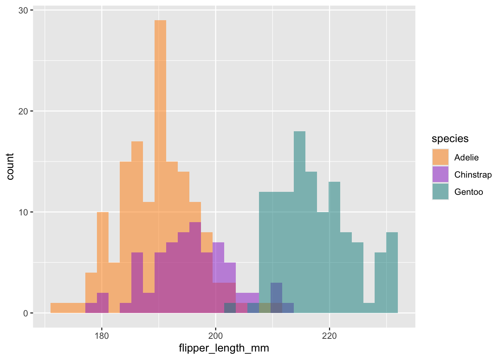
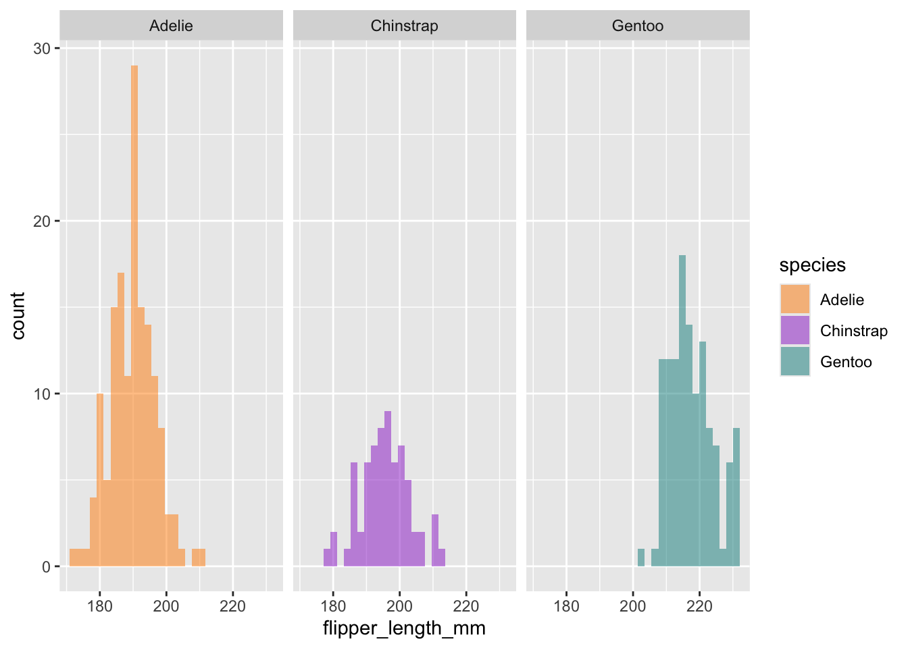

source("setup.R")4 Exploratory Data Analysis
For this lesson you will be working with the same penguins data from last week. You will be submitting this as your first assignment, so start a new R Markdown document to record your code and answers to the assignment questions, which you will submit as a rendered HTML or Word document on Canvas.
You can set up your session by executing your set up script we created in [Lesson 1][Introduction to R, RStudio and R Markdown]
OR if you haven’t created your set up script, you can load the two libraries below we will need for today:
Note: To avoid warnings and other messages showing up in your rendered R Markdown document, you can set message = FALSE and warning = FALSE in your code chunk arguments.
4.0.1 The penguins data
For this lesson, we are going to use the Palmer Penguins data set (which is loaded with the {palmerpenguins} package). This data was collected and made available by Dr. Kristen Gorman and the Palmer Station, Antarctica LTER, a member of the Long Term Ecological Research Network.
Since this is a data set from the data package {palmerpenguins}, we can use the data() function to load it into our session:
data("penguins")You should now see it in the Environment pane. Print it to the console to see a snapshot of the data:
penguins# A tibble: 344 × 8
species island bill_length_mm bill_depth_mm flipper_length_mm body_mass_g
<fct> <fct> <dbl> <dbl> <int> <int>
1 Adelie Torgersen 39.1 18.7 181 3750
2 Adelie Torgersen 39.5 17.4 186 3800
3 Adelie Torgersen 40.3 18 195 3250
4 Adelie Torgersen NA NA NA NA
5 Adelie Torgersen 36.7 19.3 193 3450
6 Adelie Torgersen 39.3 20.6 190 3650
7 Adelie Torgersen 38.9 17.8 181 3625
8 Adelie Torgersen 39.2 19.6 195 4675
9 Adelie Torgersen 34.1 18.1 193 3475
10 Adelie Torgersen 42 20.2 190 4250
# ℹ 334 more rows
# ℹ 2 more variables: sex <fct>, year <int>4.0.2 Exploratory Data Analysis
When working with a new data set, often the first thing you do is perform some initial investigations on the data using various summary statistics and graphical representations. This is exploratory data analysis! Or for short, EDA. EDA is used to catch any potential errors, assess statistical assumptions, observe patterns and help form initial hypotheses of your data that you can then test with statistics.
For our penguins data, we want to start by exploring things like sample size, variation and distribution of our variables, and make initial comparisons among species, islands, and sex.
A new Base R function we have yet to use is summary(). This functions gives us a very quick snapshot of each variable in our dataset, where we can see things like sample size and summary statistics.
summary(penguins) species island bill_length_mm bill_depth_mm
Adelie :152 Biscoe :168 Min. :32.10 Min. :13.10
Chinstrap: 68 Dream :124 1st Qu.:39.23 1st Qu.:15.60
Gentoo :124 Torgersen: 52 Median :44.45 Median :17.30
Mean :43.92 Mean :17.15
3rd Qu.:48.50 3rd Qu.:18.70
Max. :59.60 Max. :21.50
NA's :2 NA's :2
flipper_length_mm body_mass_g sex year
Min. :172.0 Min. :2700 female:165 Min. :2007
1st Qu.:190.0 1st Qu.:3550 male :168 1st Qu.:2007
Median :197.0 Median :4050 NA's : 11 Median :2008
Mean :200.9 Mean :4202 Mean :2008
3rd Qu.:213.0 3rd Qu.:4750 3rd Qu.:2009
Max. :231.0 Max. :6300 Max. :2009
NA's :2 NA's :2 For some more in depth EDA, the tidyverse packages provide many useful functions to summarize and visualize data. Today we are going to simultaneously learn more about various functions of tidyverse packages while investigating and formulating hypotheses about our penguins data set.
4.1 Data wrangling
4.1.1 The dplyr package
dplyr is a Tidyverse package to handle most of your data exploration and manipulation tasks. Now that you have learned indexing in the [Intro to R lesson][Introduction to R and RStudio], you may notice the first two dplyr functions we are going to learn, filter() and select() act as indexing functions, subsetting rows and columns based on specified names and/or conditions.
Subset rows with filter()
You can filter data in many ways using logical operators (>, >=, <, <=, != (not equal), and == (equal)), AND (&), OR (|), and NOT (!) operators, and other operations such as %in%, which returns everything that matches at least one of the values in a given vector, and is.na() and !is.na() to return all missing or all non-missing data.
# filter rows for just the Adelie species
filter(penguins, species == "Adelie")
# filter rows for all species EXCEPT Adelie
filter(penguins, species != "Adelie")
# filter islands Dream and Torgersen AND rows that DO NOT have missing values for bill length
filter(penguins, island %in% c("Dream", "Torgersen") & !is.na(bill_length_mm))Note: Tidyverse package functions take in column names without quotations.
Using dplyr functions will not manipulate the original data, so if you want to save the returned object you need to assign it to a new variable.
body_mass_filtered <- filter(penguins, body_mass_g > 4750 | body_mass_g < 3550)Subset columns with select()
select() has many helper functions you can use with it, such as starts_with(), ends_with(), contains() and many more that are very useful when dealing with large data sets. See ?select for more details
Create new variables with mutate()
mutate() allows you to edit existing columns or create new columns in an existing data frame, and you can perform calculations on existing columns to return outputs in the new column. The syntax is the name of the new column you want to make (or the current column you want to edit) on the left of =, and then to the right is what you want to put in the new column. Note that mutate() works row wise on the data frame.
if_else() reads as: IF the given argument (sex == 'male') is TRUE, put this: paste0(species,"_m") otherwise if FALSE put this: paste0(species, "_f")
Notice the use of paste0() here, and when we briefly used a similar function paste() in the ‘Functions’ section of the Intro to R lesson. Explore the difference between these two. They are both very useful functions for creating new character strings.
4.1.1.1 The pipe %>%
The pipe, %>%, comes from the magrittr package by Stefan Milton Bache. Packages in the tidyverse load %>% for you automatically, so you don’t usually load magrittr explicitly. Pipes are a powerful tool for clearly expressing a sequence of multiple operations.
For example, the pipe operator can take this sequence of operations:
And turn it into this, removing the need to create intermediate variables
You can read it as a series of imperative statements: filter, then mutate, then select. A good way to pronounce %>% when reading code is “then”. It takes the output of the operation to the left of %>% and feeds it into the next function as the input.
All the above functions can all be used in conjunction with group_by(), which changes the scope of each function from operating on the entire data set to instead operate by specified groups. group_by() becomes even more powerful when used along with summarise() to calculate some specified summary statistic for each group.
Say you want to summarize data by some specified group, for example you want to find the average body mass for each species, this is how you could do that:
# A tibble: 3 × 2
species body_mass_avg
<fct> <dbl>
1 Adelie 3701.
2 Chinstrap 3733.
3 Gentoo 5076.Notice the additional argument na.rm = TRUE within the mean() function. This is required for any mathamatical or statistical functions if you have ANY missing (NA) values in your dataset. What this does is remove those values from the calculation, otherwise mean() would just return NA without the na.rm = TRUE argument.
The output now only has 3 rows, one for each unique group (i.e., species), and a new column with the calculated average body mass for each species.
You can also group by multiple variables. Say you want to calculate the sample size (i.e., count, which can be calculated with the n() function) for each species for each year of the study:
# A tibble: 9 × 3
# Groups: species [3]
species year n_observations
<fct> <int> <int>
1 Adelie 2007 50
2 Adelie 2008 50
3 Adelie 2009 52
4 Chinstrap 2007 26
5 Chinstrap 2008 18
6 Chinstrap 2009 24
7 Gentoo 2007 34
8 Gentoo 2008 46
9 Gentoo 2009 44You can even shorten the above operation by using a new function, count(), instead of summarise():
4.2 Visualization
An important part of data exploration includes visualizing the data to reveal patterns you can’t necessarily see from viewing a data frame of numbers. Here we are going to walk through a very quick introduction to ggplot2, using some code examples from the palmerpenguins R package tutorial: https://allisonhorst.github.io/palmerpenguins/articles/intro.html.
ggplot2 is perhaps the most popular data visualization package in the R language, and is also a part of the Tidyverse. One big difference about ggplot though is that it does not use the pipe %>% operator like we just learned, but instead threads together arguments with + signs (but you can pipe a data frame into the first ggplot() argument).
The general structure for ggplots follows the template below. Note that you can also specify the aes() parameters within ggplot() instead of your geom function, which you may see a lot of people do. The mappings include arguments such as the x and y variables from your data you want to use for the plot. The geom function is the type of plot you want to make, such as geom_point(), geom_bar(), etc, there are a lot to choose from.
# general structure of ggplot functions
ggplot(data = <DATA>) +
<GEOM_FUNCTION>(mapping = aes(<MAPPINGS>))Visualize variable distributions with geom_historgram()
If you plan on doing any statistical analysis on your data , one of the first things you are likely to do is explore the distribution of your variables. You can plot histograms with geom_histogram()
ggplot(penguins) +
geom_histogram(mapping = aes(x = flipper_length_mm))
This tells us there may be a lot of variation in flipper size among species. We can use the ‘fill =’ argument to color the bars by species, and scale_fill_manual() to specify the colors.
# Histogram example: flipper length by species
ggplot(penguins) +
geom_histogram(aes(x = flipper_length_mm, fill = species), alpha = 0.5, position = "identity") +
scale_fill_manual(values = c("darkorange","darkorchid","cyan4"))
Cool, now we can see there seems to be some pretty clear variation in flipper size among species. Another way to visualize across groups is with facet_wrap(), which will create a separate plot for each group, in this case species.
ggplot(penguins) +
geom_histogram(aes(x = flipper_length_mm, fill = species), alpha = 0.5, position = "identity") +
scale_fill_manual(values = c("darkorange","darkorchid","cyan4")) +
facet_wrap(~species)
Compare sample sizes with geom_bar()
Let’s use ggplot to see sample size for each species on each island.

As you may have already noticed, the beauty about ggplot2 is there are a million ways you can customize your plots. This example builds on our simple bar plot:
ggplot(penguins, aes(x = island, fill = species)) +
geom_bar(alpha = 0.8) +
scale_fill_manual(values = c("darkorange","purple","cyan4"),
guide = FALSE) +
theme_minimal() +
facet_wrap(~species, ncol = 1) +
coord_flip()
This is important information, since we know now that not all species were sampled on every island, which will have complications for any comparisons we may want to make among islands.
Visualize variable relationships with geom_point()
We can use geom_point() to view the relationship between two continuous variables by specifying the x and y axes. Say we want to visualize the relationship between penguin body mass and flipper length and color the points by species:
ggplot(penguins) +
geom_point(mapping = aes(x = body_mass_g, y = flipper_length_mm, color = species))
4.3 Exercises
You must include the line(s) of code used to answer each question
- Why don’t the following lines of code work? Tweak each one so the code runs (3 pts.)
penguins[1:5, ("species", "island")]penguins$flipper_lenght_mmpenguins[island=='Dream',]- Find the average flipper length for each species. Which species has the largest flippers? (2 pts.)
- Which is the only species that was sampled across all three islands in this study? You must use {dplyr} functions to answer this question (e.g.,
group_by()…) (2 pts.)
- Reorder the variables in
penguinsso thatyearis the first column followed by the rest (Hint: look into the use ofeverything()). (2 pts.)
- Create a new column called ‘size_group’ where individuals with body mass greater than the overall average are called ‘large’ and those smaller are called ‘small’. (Note: this answer requires the additional use of both the
if_else()andmean()functions. Remember how to deal withNAvalues inmean()). (4 pts.)
- You want to filter data for years that are not in a vector of given years, but this code doesn’t work. Tweak it so that it does. (Yes, you could just filter year to equal 2007 in this case but there is a trouble-shooting lessons here). (2 pts.)
penguins %>%
filter(year !%in% c(2008, 2009))Please include the line(s) of code you used to create your figure and make sure the figure is shown in the rendered report.
- Using the visualization techniques you learned today, create a figure that allows you to visualize some comparison of your choice among the
penguinsdata set. Below your figure write a testable hypothesis about the data and the patterns you see from this figure. (5 pts.)